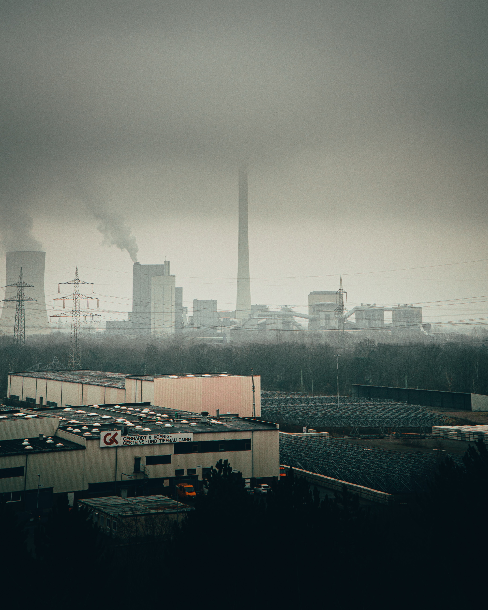

<section>
  <div class="container reveal">
    <h2>Industrial Pollution</h2>
    <div class="cards">
      <div class="text-card">
        <p>Industry is a huge source of water pollution, it produces pollutants that are extremely harmful to people and the environment.<br>

          Many industrial facilities use freshwater to carry away waste from the plant and into rivers, lakes and oceans.<br>
          
          Pollutants from industrial sources include:<br><br>
          
           
          
          <b>Asbestos</b> – This pollutant is a serious health hazard and carcinogenic. Asbestos fibres can be inhaled and cause illnesses such as asbestosis, mesothelioma, lung cancer, intestinal cancer and liver cancer.<br>
          <b>Lead</b> – This is a metallic element and can cause health and environmental problems. It is a non-biodegradable substance so is hard to clean up once the environment is contaminated. Lead is harmful to the health of many animals, including humans, as it can inhibit the action of bodily enzymes.<br>
          <b>Mercury</b> – This is a metallic element and can cause health and environmental problems. It is a non-biodegradable substance so is hard to clean up once the environment is contaminated. Mercury is also harmful to animal health as it can cause illness through mercury poisoning.<br>
          <b>Nitrates</b> – The increased use of fertilisers means that nitrates are more often being washed from the soil and into rivers and lakes. This can cause eutrophication, which can be very problematic to marine environments.<br>
          <b>Phosphates</b> – The increased use of fertilisers means that phosphates are more often being washed from the soil and into rivers and lakes. This can cause eutrophication, which can be very problematic to marine environments.<br>
          <b>Sulphur</b> – This is a non-metallic substance that is harmful for marine life.
          Oilsy – Oil does not dissolve in water, instead it forms a thick layer on the water surface. This can stop marine plants receiving enough light for photosynthesis. It is also harmful for fish and marine birds.<br>
          <b>Petrochemicals</b> – This is formed from gas or petrol and can be toxic to marine life.</p>
      </div>
      <div class="photo-card">
        
      </div>
    </div>
  </div>
</section>